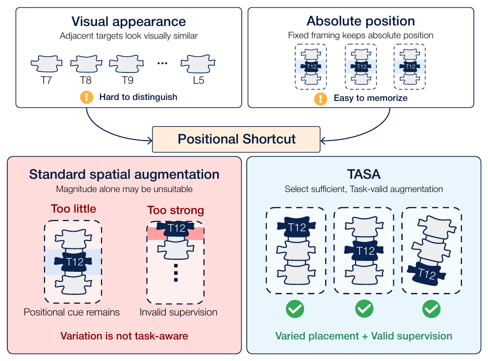
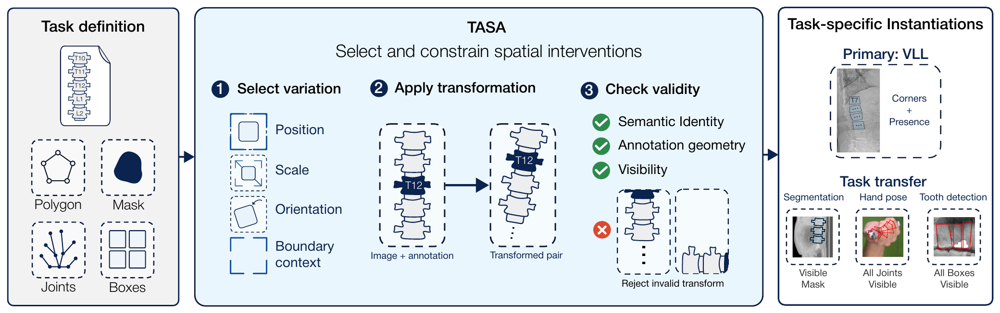
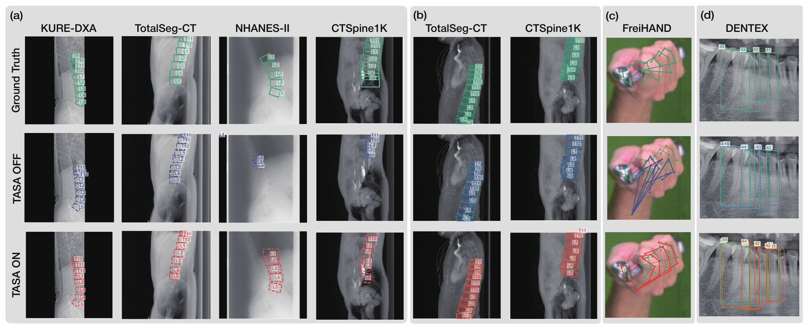

- 문제
- 촬영 구도가 고정된 데이터에서는 모델이 대상을 생김새가 아니라 이미지 속 절대 위치로 알아보는 지름길(positional shortcut)을 학습합니다. 이 모델은 촬영 범위나 구도가 바뀌면 위치는 맞게 찾고도 identity를 틀립니다.
- 내 역할
- 공동 제1저자. 문제 정의, task별 label 유효성을 기준으로 한 연구 프레임워크 설계, 검증 프로토콜과 shortcut 진단 설계, 결과 검토를 맡았습니다.
- 핵심 결과
- 척추 landmark 오차가 내부 2개, 외부 3개 데이터셋 모두에서 줄었고, 전체 모델은 기존 방법(VerteNet)보다 오차가 30.7% 낮았습니다. Hand pose에서는 구도가 바뀐 이미지의 오차가 47.3–71.3% 줄었습니다.

What problem did we solve?
1. Background
척추 뼈 · 손가락 관절 · 치아처럼 생김새가 비슷한 대상을 구분해야 하는 task에서, 촬영 구도가 고정되어 있으면 각 대상이 이미지 속 거의 같은 위치에 반복해서 나타납니다. 이때 모델은 대상을 생김새가 아니라 "이미지 속 절대 위치"로 알아보는 지름길(positional shortcut)을 학습할 수 있습니다.
이 shortcut은 학습 환경에서는 드러나지 않다가, 촬영 범위(field of view)나 framing이 바뀌는 순간 위치는 맞게 찾았지만 identity는 틀리는 오류로 이어집니다. 예를 들어 척추 landmark를 정확히 찾고도 T12를 L1으로 잘못 부르면, 그 뒤의 level별 측정이 모두 틀어집니다.
Random crop · affine 같은 일반적인 spatial augmentation은 이 문제를 충분히 풀지 못합니다. 변화가 너무 약하면 위치 단서가 그대로 남고, 너무 강하면 annotation이 이미지 밖으로 밀려나 supervision 자체가 깨지기 때문입니다.
Research Questions
- Can task-valid spatial variation weaken the identity–position association without breaking supervision?
- Is increasing augmentation diversity alone sufficient, or does the choice of transformation matter?
- Does the same principle transfer across output representations (landmarks, masks, joints, boxes)?
- Do the gains actually come from reduced reliance on absolute position?
Objective
새로운 변환을 만드는 대신, task마다 어떤 spatial 변환이 유효한지 선택하고 제약하는 프레임워크(TASA)를 정의하고, 이것이 여러 vision task에서 촬영 구도 변화에 대한 robustness를 높이는지 검증합니다.
How did we solve it?
2. Dataset
- Vertebral landmark localization (primary): lateral DXA + CT projection 공동 학습 (train 1,459 / val 183 / test 181 scans)
- 외부 검증: NHANES-II radiograph (268) · CTSpine1K CT projection (987) · BUU-LSPINE radiograph (400)
- Vertebral segmentation: TotalSegmentator-CT projection, 외부 검증 CTSpine1K
- 2D hand pose estimation: FreiHAND 8,192 images, 21 joints
- Tooth detection + FDI numbering: DENTEX panoramic radiograph 607장, 32개 치아 identity
모든 결과는 3 seeds 평균 ± 표준편차로 보고했습니다.
3. Method

Fig 2. TASA Overview
Task-Aware Spatial Augmentation (TASA)
TASA는 대상의 위치 · scale · 방향 · 이미지 경계(boundary context)를 바꾸되, 아래 세 가지 조건을 만족하는 변환만 남깁니다.
- Semantic validity: 변환 후에도 모든 대상의 identity가 유지되어야 함 (예: 치아 task에서 좌우 반전은 FDI 번호를 바꾸므로 제외)
- Geometric validity: 이미지와 모든 annotation에 같은 변환을 적용
- Visibility validity: supervision이 필요한 대상이 잘려 나가면 해당 변환을 reject (mask는 보이는 영역만 supervision)
변환 범위는 task별 촬영 · crop geometry와 label 조건으로 정한 뒤 held-out 평가 전에 고정했습니다. 비교는 항상 TASA OFF / ON 한 쌍으로, 데이터 split · 초기화 · 학습 예산 · non-spatial augmentation · checkpoint 선택 규칙을 모두 동일하게 두고 spatial 변환만 바꿨습니다.
Method highlights
- Task-valid spatial intervention (not more augmentation)
- Identity-aware vertebral localization model
- Matched TASA OFF / ON comparison
- 4 tasks · DXA · CT · X-ray · RGB images
- Component ablation (8 combinations) & encoder swap (3 encoders)
- Removal-based shortcut diagnostics with background control
Identity-Aware Vertebral Landmark Localization
기존 방법(VerteNet)은 class 구분 없이 척추를 찾은 뒤 위에서부터 순서대로 번호를 붙이기 때문에, 촬영 범위가 달라 일부 level이 보이지 않으면 번호가 통째로 밀립니다. 이를 피하기 위해 T7–L5 11개 level별로 landmark를 직접 예측하고, level query 기반 attention module로 각 level이 이미지에 보이는지(presence)를 함께 예측하는 구조를 사용했습니다. (DINOv3-ConvNeXt-T encoder + FPN)
Experimental Design
- Internal / external evaluation: 학습 데이터셋 2종 + 외부 데이터셋 3종
- Comparison with previous method: VerteNet과 DXA-only 조건에서 동일 split · 평가 프로토콜로 비교
- Cross-task transfer: segmentation (U-Net · Mask2Former · EoMT), hand pose (ResNet-18 · HRNet-W18 · RTMPose-m), detection (YOLOv8n)
- Component ablation: affine · boundary margin · multiscale crop의 8개 조합
- Encoder swap: DINOv3-ConvNeXt-T · ViT-S/16 · ConvNeXtV2-T
- Shortcut diagnostics: 대상 · 이웃 척추 · 이미지 경계를 가린 intervention과, 척추 밖 영역을 가리는 background control
What were the results?
4. Results
- Finding 1: TASA는 척추 landmark 오차를 내부 2개 · 외부 3개 데이터셋 모두에서 줄였습니다. 외부 데이터셋에서의 감소폭은 7.0–29.3%로, 촬영 소스에 따라 차이가 있었습니다.
- Finding 2: 동일 조건 비교에서 기존 방법(VerteNet) 대비 오차를 30.7% 줄였습니다. 이 중 모델 구조 차이가 약 3 mm, TASA가 추가로 약 6.7 mm를 줄였습니다.
- Finding 3: Hand pose에서 손의 위치 · 크기가 달라진 crop으로 평가하면, TASA 없이 학습한 모델은 오차가 크게 늘었지만 TASA 적용 모델은 표준 crop 수준을 유지했습니다. 3개 architecture에서 오차 47.3–71.3% 감소.
- Finding 4: Augmentation을 더 많이 넣는 것이 답은 아니었습니다. Boundary margin이나 multiscale을 affine 없이 단독으로 쓰면 오히려 오차가 커졌고, affine이 개선의 대부분을 설명했습니다.
- Finding 5: 대상을 가렸을 때 없는 척추를 "있다"고 예측하는 비율(hallucination)이 줄었고, 이미지 경계를 가렸을 때의 오차 증가폭이 16.97 → 3.44 mm로 감소했습니다. Background control의 반응은 거의 0으로, 단순 masking artifact로는 설명되지 않았습니다.
Vertebral landmark localization: four-corner MRE (mm, ↓)
| Evaluation | Dataset | TASA OFF | TASA ON | Change |
|---|---|---|---|---|
| Internal | KURE-DXA | 20.13 ± 0.81 | 17.38 ± 2.52 | −13.7% |
| Internal | TotalSegmentator-CT | 11.39 ± 1.00 | 7.98 ± 0.89 | −29.9% |
| External | NHANES-II | 48.37 ± 4.81 | 35.58 ± 3.46 | −26.4% |
| External | CTSpine1K | 32.93 ± 0.59 | 30.63 ± 0.40 | −7.0% |
| External | BUU-LSPINE | 18.97 ± 2.61 | 13.42 ± 0.50 | −29.3% |
Comparison with previous method: KURE-DXA only, four-corner MRE (mm, ↓)
| Method | MRE |
|---|---|
| VerteNet | 31.64 ± 2.01 |
| Ours · TASA OFF | 28.63 ± 3.06 |
| Ours · TASA ON | 21.94 ± 1.37 (VerteNet 대비 −30.7%) |

Fig 3. 4개 task 정성 결과: 같은 입력에 대한 TASA OFF vs ON 예측
Cross-task transfer: TASA OFF → ON
| Task | Model / Metric | TASA OFF | TASA ON | Change |
|---|---|---|---|---|
| Segmentation External Dice ↑ | U-Net | 0.377 | 0.317 | −15.9% |
| Mask2Former-Swin-T | 0.653 | 0.714 | +9.3% | |
| EoMT-DINOv3-L | 0.782 | 0.818 | +4.6% | |
| Hand pose Changed-framing NME ↓ | ResNet-18 | 0.1500 | 0.0791 | −47.3% |
| HRNet-W18 | 0.1408 | 0.0717 | −49.1% | |
| RTMPose-m | 0.2056 | 0.0589 | −71.3% | |
| Tooth detection DENTEX ↑ | AP | 0.4880 | 0.4986 | +2.2% |
| AP50 | 0.8845 | 0.9160 | +3.6% | |
| FDI accuracy | 0.8439 | 0.8762 | +3.8% |
Shortcut diagnostics: 100 held-out KURE-DXA scans
| Intervention | Metric | TASA OFF | TASA ON |
|---|---|---|---|
| Target hidden | Hallucination rate ↓ | 0.686 | 0.587 |
| Neighbors hidden | ΔMRE (mm) ↓ | 33.53 | 27.10 |
| Boundary hidden | ΔMRE (mm) ↓ | 16.97 | 3.44 |
| Background control | ΔMRE (mm), ≈ 0 expected | 0.70 | −0.20 |
5. Discussion & Limitation
Discussion
- Shortcut을 줄이는 핵심은 augmentation의 양이 아니라, task의 label 구조를 깨지 않는 변환을 고르는 것이었습니다.
- 같은 원칙이 landmark · mask · joint · bounding box라는 서로 다른 출력 형태에 모두 적용되었습니다.
- TASA의 효과는 encoder에 묶여 있지 않았습니다. 3개 encoder 모두 내부 데이터셋 2종에서 오차가 13.7–38.2% 줄었습니다.
Limitation
- 효과는 architecture에 따라 달랐습니다. Segmentation 외부 평가에서 Transformer 계열(Mask2Former · EoMT)은 개선되었지만 U-Net은 Dice가 15.9% 떨어졌습니다.
- 외부 데이터셋의 개선폭은 촬영 소스에 따라 달랐습니다 (CTSpine1K −7.0% vs BUU-LSPINE −29.3%).
- Multiscale crop을 추가하는 것은 두 데이터셋에서 일관된 이득을 주지 않았습니다.
- Shortcut diagnostics는 KURE-DXA 한 데이터셋에서만 수행했고, 결과는 위치 의존도 감소와 일치하는 근거이지 직접적인 증명은 아닙니다.
- 공개 BUU-LSPINE subset은 이미지별 spacing 정보가 없어 0.150 mm/pixel을 가정했습니다.
What was my contribution?
Co-First Author
- Problem framing: 절대 위치와 identity가 결합되는 positional shortcut을 failure mode로 정의
- Research framework design: task별 label validity(semantic · geometric · visibility)를 기준으로 spatial 변환을 선택 · 제약하는 연구 틀 설계
- Validation protocol design: matched TASA OFF / ON 비교, component ablation, encoder swap, cross-task transfer 구성
- Shortcut diagnostics design: 대상 · 이웃 · 경계 제거 intervention과 background control 설계
- Result review: 결과 해석, 효과가 유지되거나 사라지는 조건 정리
What did I learn?
Technical Insight
성능이 떨어지는 원인을 모델 구조가 아니라 데이터가 만든 지름길에서 찾을 수 있다는 것을 배웠습니다. 같은 모델이라도 학습 데이터에서 대상이 어디에 나타나는지에 따라 전혀 다른 단서를 학습하고, augmentation을 무작정 늘리면 오히려 성능이 떨어질 수 있었습니다. "어떤 변환이 이 task에서 유효한가"를 먼저 정의하는 것이 robustness의 출발점이었습니다.
This project taught me that robustness failures can originate from shortcuts created by the data rather than from the architecture. Adding more augmentation was not the answer; defining which transformations remain valid for each task was.
Research Insight
성능 향상만으로는 "왜 좋아졌는가"를 주장할 수 없다는 점을 체감했습니다. 개선이 정말 위치 의존도 감소에서 왔는지 확인하기 위해 intervention과 control을 따로 설계했고, 효과가 사라지는 조건(U-Net 외부 평가 등)까지 결과로 남기는 것이 결론의 신뢰도를 높인다는 것을 배웠습니다. 공동 제1저자로서 문제 정의와 검증 설계를 맡아, 실험을 수행한 공동 저자와 가설 → 실험 → 해석의 흐름을 함께 맞춰 나갔습니다.
A performance gain alone does not explain why a method works. Designing interventions with proper controls, and reporting the conditions under which the effect disappears, made the conclusion far more credible.